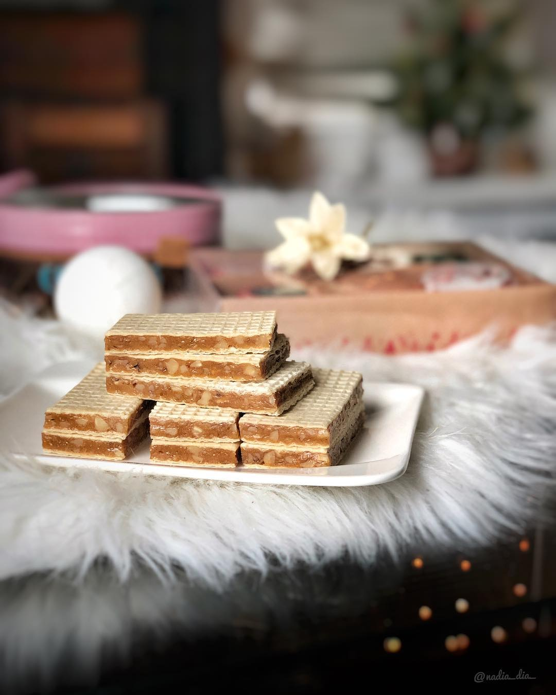

Grilážové rezy podľa @nadia_dia_ — Normy Jedál
Ľudiaaa akože takéto grilážky bez cuuuuuukruuuuu, bez ďatlí, plné bielkovín sa mi ešte podarili 🙊... Problém je v tom, že príprava bola “dosť lepkavá” 😂 a tak ten recept musím ešte doladiť, aby ste ma pri príprave nezaklínali 😅 no jedno je isté, tieto Vianoce si fičím na tomto #protein #cukrovi 💃🏽🎄🥂💪🏽 #homemade#grilazoverezy#grilazky#nocaramel#proteinsweets#protein#sweets#yummy#nobake#xmas#christmas#vianoce#vanoce#dnesjem#daybyme#yummy#fit#fitsweet#foodie#fitfoodie#fitnesscukrovi